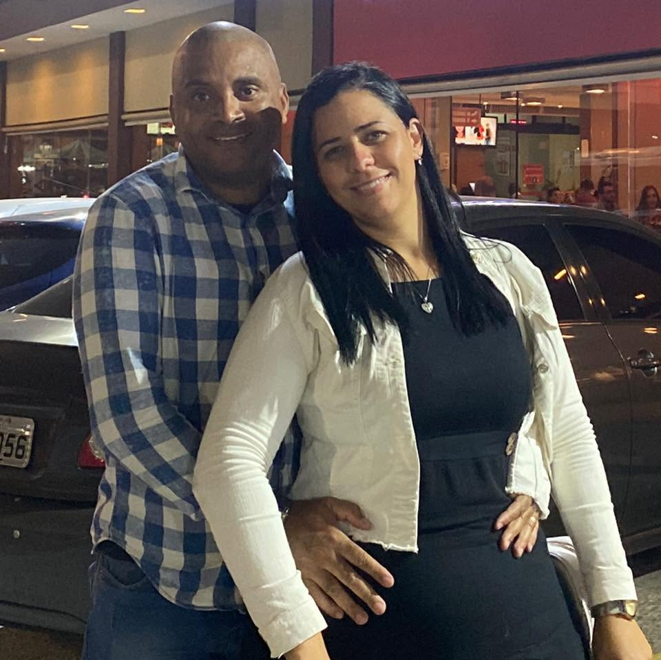
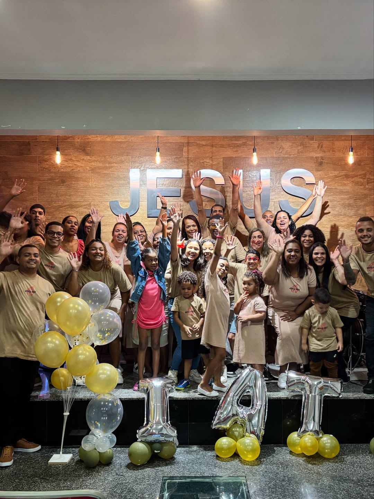
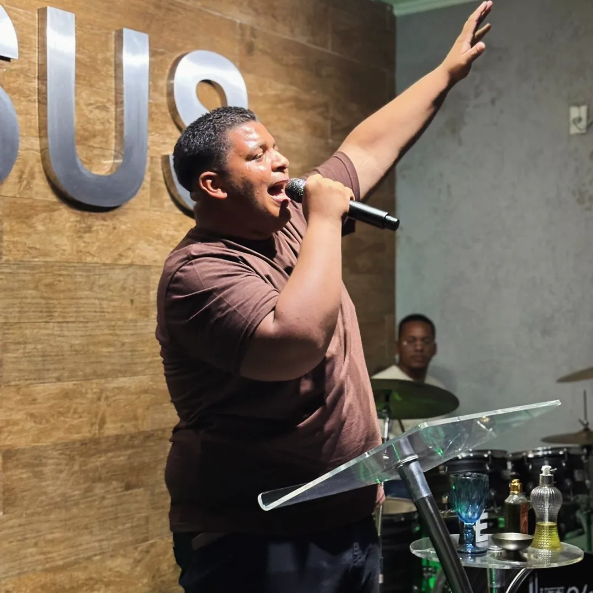

Nossa História
A Igreja Apostólica Tenda dos Profetas nasceu do desejo de ver uma comunidade sólida, fundamentada na Palavra de Deus e no amor fraternal, servindo a Deus e ao próximo no bairro Ricardo de Albuquerque, no Rio de Janeiro.
Ao longo dos anos, crescemos como família — não apenas em número, mas em fé, em caráter e em serviço. Cada culto, cada oração partilhada, cada vida transformada é uma pedra viva nessa obra que Deus construiu.
Somos uma igreja apostólica, comprometida com o ensino bíblico, o evangelismo e o cuidado com as pessoas. Aqui, todo mundo é bem-vindo.
"O leão rugiu, quem não temerá? O Senhor Deus falou, quem não profetizará?" — Amós 3:8
Programação
Domingo
Culto principal da semana — Palavra, louvor e comunhão.
🕙 10h00 | 🌙 19h00
Quarta-feira
Mergulhe na Palavra com ensinamentos profundos e práticos.
🕕 19h30
Sexta-feira
Noite de intercessão e busca à presença de Deus.
🕗 19h30
Sábado
Encontro especial para a juventude — louvor, Palavra e comunhão.
🕓 16h00
Áreas de Serviço
Músicos e vocalistas que conduzem a congregação à presença de Deus.
Ensino sistemático da Bíblia para todas as idades e estágios de fé.
Espaço de formação e comunhão para a nova geração da igreja.
Guerreiros de oração que intercede pela igreja e pela cidade.
Cuidado e orientação para casais, pais e filhos na fé.
Levando o Evangelho às ruas e comunidades ao redor.
Memórias



Para adicionar fotos: coloque os arquivos na pasta fotos/ e substitua os placeholders por <img src="fotos/nome.jpg">
Assista online
Culto de Adoração
Atualize com a data do culto
Estudo Bíblico
Atualize com a data
Venha nos visitar
Rua Lobo, 292
Ricardo de Albuquerque
Rio de Janeiro – RJ
Dom 10h e 19h · Qua 19h30
Sex 19h30 · Sáb 16h (Jovens)
Rua Lobo, 292 · Ricardo de Albuquerque · Rio de Janeiro